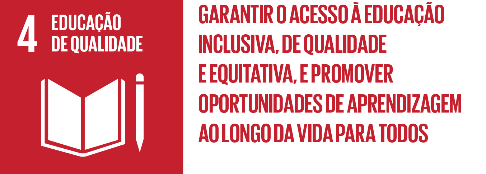
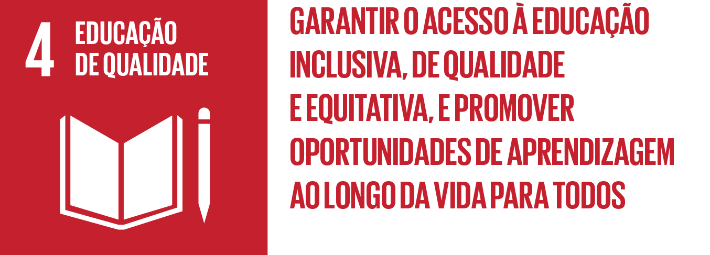

Educação a Distância
Sabemos que devido à pandemia da COVID-19(Coronavírus) tem sido muito difícil manter seus estudos em dia, por isso, separamos diversas ferramentas para ajudar você, aluno ou professor, a continuar seus estudos ou até se divertir com seus amigos jogando juntos.
Essas ferramentas vão de softwares e plataformas de videoconferência em grupo até aplicativos de testes de múltipla escolha que diminuem as distâncias físicas e permitem que 3 ou mais pessoas interajam através do computador. Algumas dessas ferramentas online têm perfis mais corporativos. Já outros buscam proporcionar uma verdadeira festa virtual.
Procura um aplicativo para conferências profissionais, jogos ou apenas desafios de múltipla escolha? Confira a lista abaixo com algumas ferramentas para te ajudar durante essa quarentena.
Os Objetivos de Desenvolvimento Sustentável (ODS) são um apelo universal da Organização das Nações Unidas à ação para acabar com a pobreza, proteger o planeta e assegurar que todas as pessoas tenham paz e prosperidade. Saiba mais nos links abaixo:
Todas as ODSs: https://nacoesunidas.org/pos2015/
 
